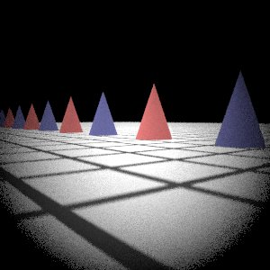

一個簡單的class包含該鏡片的radius, thick, n, aperture
Vector<SingleLen> lenSystem//含所有鏡片的鏡片組
float filmDistance//底片到最內層鏡片距離
float apertureDiameter//光圈大小
float filmDiag//底片對角線長
Transform RasToScreen//從照片轉到底片的矩陣
RasToScreen = Scale(-xScale, yScale, 1.f) * Translate(Vector(-0.5f, -0.5f, 0.f)) * Scale(1.f / film->xResolution, 1.f / film->yResolution, 1.f);
//在RealisticCamera的constructor中先把照片縮放成xy各一單位的大小，再把原點移動到中間，接著由filmDiag以及原本xy的比例放大回底片的大小
利用sample找到照片上的一個起點，接著用RasToScreen轉換到底片上的位置。用lensUV找到最內層鏡片的一個點，但要注意這個點並不是最內層鏡片的交點，所以必須用起點跟此點算出ray.d再去求交點。求交點的過程中可以參考sphere.cpp裡面的寫法，但是每個鏡片的密切圓圓心都要在原點才能使用他的方法，故每次要到下一片鏡片求交點時都要先把光的起點轉換到以該密切圓圓心為原點的座標系，詳細的步驟只是z軸的平移而已實作在ToSphereCoordinate裡面。
找到交點之後要測試打到的位置是不是在鏡片的弧面還是只在密切圓的其它部分，如果sqrt(Phit.x * Phit.x + Phit.y * Phit.y) * 2 > aperture就代表不是打在弧面，所以可以立刻返回節省時間。
接下來使用Heckbert’s Method計算出折射光的方向，但要注意其中的每個向量都要normalize。算出來的方向跟交點就可以用來計算到下一層鏡片的交點了，但也還是要對下一片鏡片轉換座標系。上面的過程都是包在for loop裡面直到算出最外層的鏡片交點跟射出光的方向，此時把這條光經過CameraToWorld的轉換就大功告成，但是camera space的原點並沒有說是要定在底面上還是哪邊，經過測試發現定在最外層鏡片的光軸上render出來的結果才會跟測資一致。
dgauss32&512
fisheye32&512
telephoto32&512
wide32&512
CPU: Intel Xeon E5-2650 v3 40core 2.3GHz, MEM: 128G, OS: Debian 64bit
如果直接使用sphere的intersect()可以很方便的求交點，但是這樣就必須花時間生成一個object，所以選擇用複製貼上該段code並稍微修改的方式即可加速
一開始為了方便沒有呼叫ray的constructor而直接指定o跟d，但這樣做會導致minT&maxT的不確定，會造成圖片上有一格一格的黑色產生如下圖。